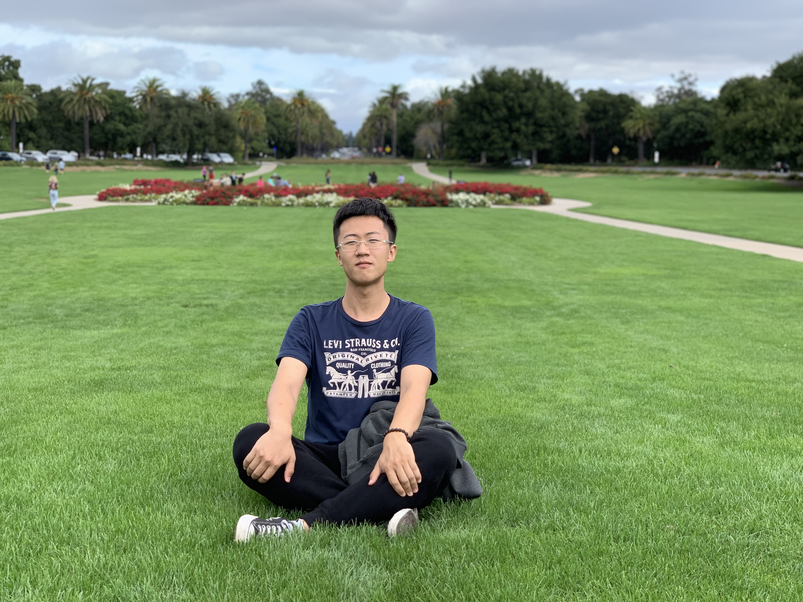

|
Haoya Li – Home page
|
 |
I am a fifth-year Ph.D. student at the Department of mathematics at Stanford University. I am very fortunate to be advised by Professor Lexing Ying.
I received my Bachelor's degree in Mathematics from Peking University in 2019. Here is my CV.
|
Papers
Quantum Multiple Eigenvalue Gaussian filtered Search: an efficient and versatile quantum phase estimation method
Zhiyan Ding, Haoya Li, Lin Lin, Hongkang Ni, Lexing Ying, Ruizhe Zhang
Submitted
Quantum Hamiltonian Learning for the Fermi-Hubbard Model
Hongkang Ni, Haoya Li, Lexing Ying
Submitted
Heisenberg-limited Hamiltonian learning for interacting bosons
Haoya Li, Yu Tong, Tuvia Gefen, Hongkang Ni, Lexing Ying
Submitted
On low-depth quantum algorithms for robust multiple-phase estimation
Haoya Li, Hongkang Ni, Lexing Ying
Physical Review A
A note on spike localization for line spectrum estimation
Haoya Li, Hongkang Ni, Lexing Ying
Applied and Computational Harmonic Analysis
On low-depth algorithms for quantum phase estimation
Hongkang Ni, Haoya Li, Lexing Ying
Quantum
On efficient quantum block encoding of pseudo-differential operators
Haoya Li, Hongkang Ni, Lexing Ying
Quantum
Monte Carlo tree search based hybrid optimization of variational quantum circuits
Jiahao Yao, Haoya Li, Marin Bukov, Lin Lin, Lexing Ying
MSML 2022
Accelerating primal-dual methods for regularized Markov decision processes
Haoya Li, Hsiang-fu Yu, Lexing Ying, Inderjit Dhillon
SIAM Journal on Optimization (SIOPT)
Approximate Newton policy gradient algorithms
Haoya Li, Samarth Gupta, Hsiang-fu Yu, Lexing Ying, Inderjit Dhillon
SIAM Journal on Scientific Computing (SISC)
A semigroup method for high dimensional elliptic PDEs and eigenvalue problems based on neural networks
Haoya Li, Lexing Ying
Journal of Computational Physics
A semigroup method for high dimensional committor functions based on neural network
Haoya Li, Yuehaw Khoo, Yinuo Ren, Lexing Ying
MSML 2021
A simple multiscale method for mean field games
Haoya Li, Yuwei Fan, Lexing Ying
Journal of Computational Physics
Teaching
Math 104: Applied Matrix Theory
Fall 2019, Spring 2020, Winter 2021
Math 51: Linear Algebra and Differential Calculus of Several Variables
Spring 2021, Fall 2023
Math 172: Lebesgue Integration and Fourier Analysis
Fall 2021
Math 20: Calculus
Winter 2022
Math 53: Ordinary Differential Equations with Linear Algebra
Fall 2022
Math 131P: Partial Differential Equations
Winter 2023, Winter 2024
Seminar for the Preparation of Applied Mathematics Qualifying Examinations
Contact
|